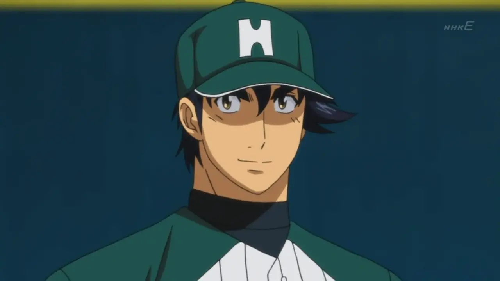

<!DOCTYPE html>
<html lang="en">
  <head>
    <meta charset="UTF-8" />
    <meta name="viewport" content="width=device-width, initial-scale=1.0" />
    <link rel="icon" type="image/facebook-icon" href="images/favicon.ico" />
    <link
      rel="stylesheet"
      href="https://cdnjs.cloudflare.com/ajax/libs/font-awesome/6.7.2/css/all.min.css"
      integrity="sha512-Evv84Mr4kqVGRNSgIGL/F/aIDqQb7xQ2vcrdIwxfjThSH8CSR7PBEakCr51Ck+w+/U6swU2Im1vVX0SVk9ABhg=="
      crossorigin="anonymous"
      referrerpolicy="no-referrer"
    />
    <link rel="stylesheet" href="index.css" />
    <title>Facebook Clone</title>
  </head>
  <body>
    <header class="facebook-header">
      <div class="logo-search">
        
        <i class="fa-solid fa-magnifying-glass"></i>
        <input type="text" placeholder="Search Facebook" class="search-box" />
      </div>
      <nav class="navbar">
        <button class="active">
          <i class="fa-solid fa-house-chimney"></i>
        </button>
        <button><i class="fa-solid fa-film"></i></button>
        <button><i class="fa-solid fa-store"></i></button>
        <button><i class="fa-solid fa-users-rectangle"></i></button>
        <button><i class="fa-solid fa-gamepad"></i></button>
      </nav>
      <nav class="side-navbar">
        <button><i class="fa-solid fa-bars"></i></button>
        <button><i class="fa-brands fa-facebook-messenger"></i></button>
        <button><i class="fa-solid fa-bell"></i></button>
        
      </nav>
      <button class="profile-pic-menu">
        <i class="fa-solid fa-chevron-down"></i>
      </button>
    </header>
    <aside class="sidebar">
      <div>
        
        <span>Jane Doe</span>
      </div>
      <div>
        <i class="fa-solid fa-user-group sidebar-icon"></i>
        <span>Friends</span>
      </div>
      <div>
        <i class="fa-solid fa-clock sidebar-icon"></i>
        <span>Memories</span>
      </div>
      <div>
        <i class="fa-solid fa-bookmark sidebar-icon"></i>
        <span>Saved</span>
      </div>
      <div>
        <i class="fa-solid fa-users sidebar-icon"></i>
        <span>Groups</span>
      </div>
      <div>
        <i class="fa-solid fa-tv sidebar-icon"></i>
        <span>Video</span>
      </div>
      <div>
        <i class="fa-solid fa-store sidebar-icon"></i>
        <span>Marketplace</span>
      </div>
      <div>
        <i class="fa-solid fa-newspaper sidebar-icon"></i>
        <span>Feeds</span>
      </div>
      <div>
        <button class="see-more-btn">
          <i class="fa-solid fa-angle-down"></i>
        </button>
        <span>See more</span>
      </div>
    </aside>
    <aside class="contacts-sidebar">
      <div class="contacts-heading">
        <h2>Contacts</h2>
        <div class="contacts-icons">
          <i class="fa-solid fa-magnifying-glass"></i>
          <i class="fa-solid fa-ellipsis"></i>
        </div>
      </div>
      <div class="contacts-name">
        
        <span>Goro Shigeno</span>
        <div class="online-status"></div>
      </div>
      <div class="contacts-name">
        
        <span>Sato Toshiya</span>
        <div class="online-status2"></div>
      </div>
      <div class="contacts-name">
        
        <span>Kaoru Shimizu</span>
        <div class="online-status3"></div>
      </div>
      <div class="contacts-name">
        
        <span>Daisuke Komori</span>
        <div class="online-status4"></div>
      </div>
      <div class="contacts-name">
        
        <span>Ken Mayumura</span>
        <div class="online-status5"></div>
      </div>
      <div class="contacts-name">
        
        <span>Fuji</span>
        <div class="online-status6"></div>
      </div>
      <div class="contacts-name">
        
        <span>Ryota Sawamura</span>
        <div class="online-status7"></div>
      </div>
    </aside>
  </body>
</html>
